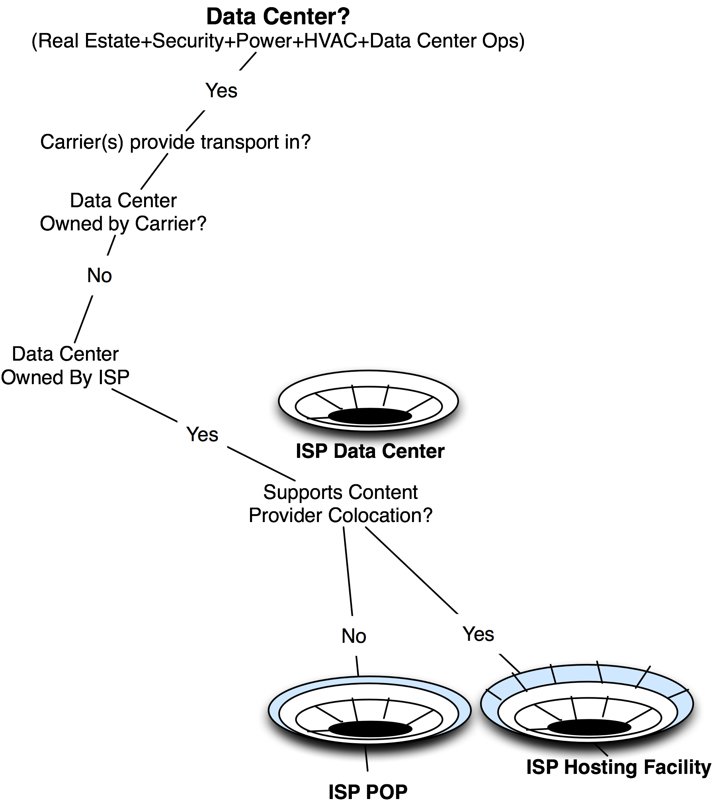
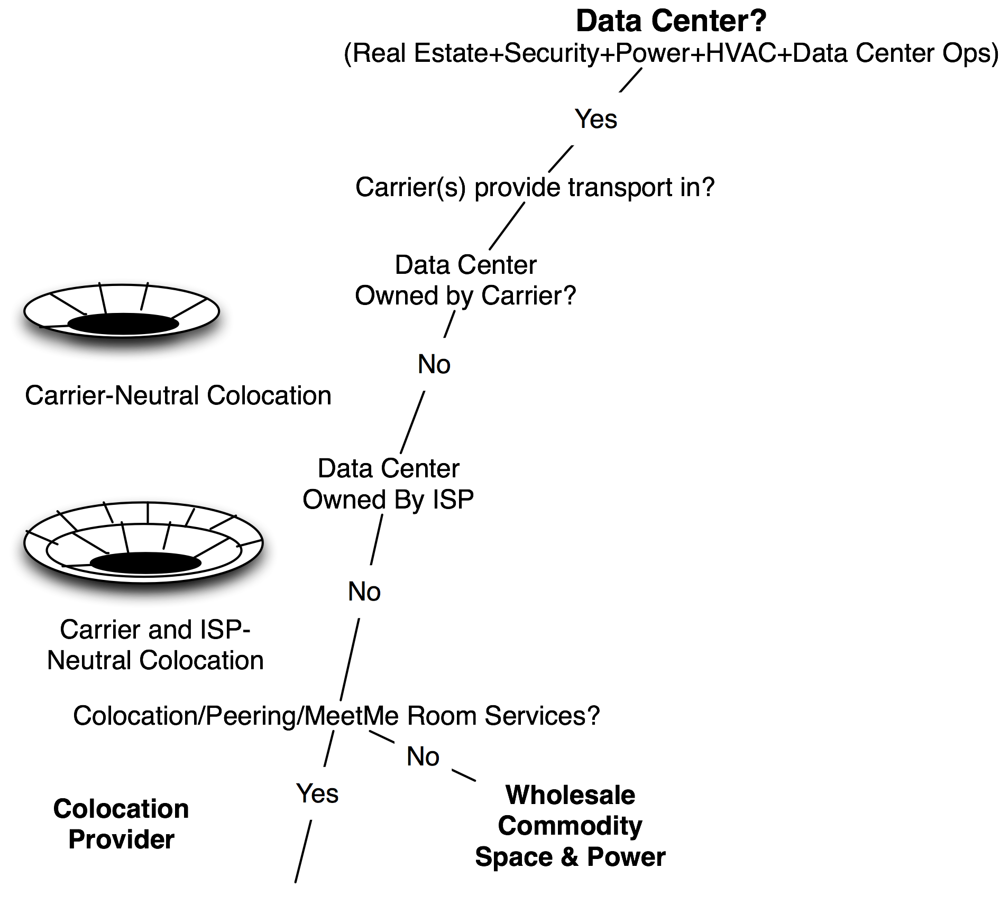

The Internet Data Center
Definition: An Internet Data Center is a data center with Internet access.
ISP Data Center
An ISP Data Center is an Internet Data Center that is owned by an ISP. It has one or more carriers providing transport into the building, but being owned by an ISP, generally allows its customers to access only its own Internet Transit services. There is no open market for Internet Transit services here (Figure 12-15).
Internet Service Provider POP
Definition: An ISP POP is space within a data center operated by an ISP that is solely for the use of the ISP itself.
An Internet Service Provider POP is where you will find routers, out-of-band access equipment, tributary routers, etc. that support the operation of the ISP network. An ISP POP supports exactly one customer – the ISP itself. If it supports more than itself, it would be categorized as an ISP Hosting Facility.
An ISP Hosting Facility
Definition: An ISP Hosting Facility is space within a data center that is operated by an ISP providing conditioned space and power along with Internet Transit services for its customers.
An ISP Hosting Facility is where you will find space for colocated customers (shown as lines across the outer ring in the model shown in Figure 12-15). There is typically only the ISP providing Internet Transit services to the population, so we show that as a solid, single ring.

Figure 12-15. The litmus tests differentiate data center business models.
Notes from the field.
The Turkey Story
I learned firsthand from an Internet Service Provider in Turkey why neutrality is an important characteristic of Internet Data Centers marketed as colocation centers. He shared with me the following story.
There were really only three Internet Service Providers in Turkey, and the Internet traffic exchanged between them traversed the Atlantic Ocean (twice!) before reaching each other’s customers! This scenario was a perfect place to apply Internet Peering, a direct business relationship between competitors whereby they each freely exchange access to each other’s customers.
But there was no IXP in Turkey, so there was no Public Peering ethernet switch, and no separate commercial or association-based entity to oversee an IXP.
“No problem.” One of the ISPs “volunteered” to buy the switch and host it at his data center. He even agreed to provide free rack space for the other competitors in his data center for the purposes of Internet Peering, a free and reciprocal exchange of access to each other’s customers. The other two ISPs agreed, and they built into his data center, and the three ISPs peered with each other. Turkish traffic stayed in Turkey, so all was well in the Turkish Internet Region.
The traffic volume grew as a side effect of lower latency and lower packet loss. The Internet Region blossomed, and the volume of traffic continued to grow at a healthy pace. The importance of the Turkish Internet Exchange, owned and operated by the ISP that volunteered, was recognized by everyone (regulators, ISPs, customers, content providers, etc.). Everyone celebrated the success of the Turkish Internet Region.
Then, the volunteer ISP started touting his ISP as being the “center of the Turkish Internet,” pointing to the amount of traffic and the prestige it had gained from operating the IXP. As a side effect, it started getting increased market share, reinforcing its market positioning that it was the center of the Turkish Internet.
The other two ISPs did not like this situation at all but could not pull out from the Internet Exchange and go back to having the traffic traverse the Atlantic Ocean twice again.
This tale is a cautionary tale of why an IXP should be run by a neutral third party, one that does not compete against the participants.
The inherent value of this facility is proportional to the number, diversity, and desirability of the wide range of transport and transit services, along with the capability to peer with each other.
Another key value of the carrier-neutral IDC is the open market for Internet Transit services. The ISPs can participate in the marketplace for transit services without any market distortions. Here again, an ISP-owned data center is unlikely to have competitors in its building selling transit to its customers, but a colocation center will tend to have a variety of ISPs forming the open marketplace for transit services. Some in the community have estimated that prices for transit could be 30% less in well-populated colocation centers. The robust marketplace for transit and peering are the key value propositions that will bring additional customers in.
Figure 12-16. The ISP ring in the data center model.
IDCs for Hosting Content
The outermost ring of the data center model is for content companies that take advantage of the network. Here we have the hosting companies, portals, CDNs, Content Providers, etc. These participants tend to prefer a richly networked IDC with an open marketplace of ISP services, providing the required flexibility, robustness, and ever-decreasing transit prices.
Colocation vs. Wholesale IDC
Some data centers are carrier-neutral and ISP-neutral, but are built with the primary intent of reselling or leasing large chunks of that space to others on a wholesale basis. This model is different from the colocation companies that focus on building the “right” population that maximizes the interaction value to its customers.
One way to differentiate these two categories is with the litmus test – does the operator actively evangelize interconnection among a large population of participants? If the answer is yes, then we have a colocation company. If the answer is no, then we have a wholesale data center (Figure 12-17).
The key differentiator between providers of real estate and providers of colocation space is the managed ecosystem. Colocation is more than a real estate play – successful colocation providers understand their customers’ ecosystem, and build the right mix of players based on how customers interact with and derive value from each other.
A common question follows:
“Given enough money, can a competitor reproduce what a well-populated colocation provider has?”
It is possible, but very difficult because the value of the IXP is proportional to the number and diversity of the population there. Since these players are already in the building and presumably getting value from the presence, it will be difficult to get them to move or build in to obtain the same value. The population is a long-term sustainable differentiator for well-populated colocation centers. It is interesting that the main value of the colocation center has nothing to do with the physical data center (which can be reproduced) but has everything to do with the population.

Figure 12-17. The litmus tests differentiate neutrality.